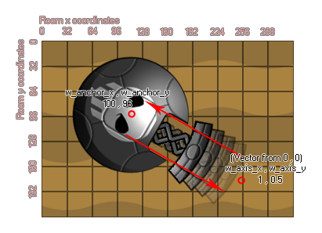

physics_joint_prismatic_create
Erstellen Sie ein prismatisches Gelenk, das zwei Instanzen verbindet und eine Bewegung entlang einer festen Achse ermöglicht.
Syntax:
physics_joint_prismatic_create(inst1, inst2,
w_anchor_x, w_anchor_y, w_axis_x, w_axis_x, lower_trans_limit,
upper_trans_limit, limit, max_motor_force, motor_speed, motor,
col)
| Streit | Beschreibung |
|---|
| inst1 | Die erste Instanz zum Verbinden mit dem Gelenk |
| inst2 | Die zweite Instanz, um sich mit dem Gelenk zu verbinden |
| w_anchor_x | Die x-Koordinate, an der das Gelenk verankert ist, innerhalb der Spielwelt |
| w_anchor_y | Die y-Koordinate, an der das Gelenk innerhalb der Spielwelt verankert ist |
| w_axis_x | Die x-Komponente des Achsenvektors |
| w_axis_y | Die y-Komponente des Achsenvektors |
| lower_trans_limit | Die untere zulässige Grenze für die Gelenkbewegung |
| upper_trans_limit | Die untere zulässige Grenze für die Gelenkbewegung |
| limit | Ob die Bewegung des Gelenks begrenzt werden soll (wahr) oder nicht (falsch) |
| max_motor_force | Stellt die maximale Bewegungsgeschwindigkeit für den Motor ein |
| motor_speed | Dies ist die Geschwindigkeit, mit der sich der Motor bewegen sollte |
| motor | Ob der Motor aktiv sein soll (wahr) oder nicht (falsch) |
| col | Ob die beiden Instanzen kollidieren können (wahr) oder nicht (falsch) |
Rückgabe: Index des Gelenks
Beschreibung
Wie ein Drehgelenk hat das prismatische Gelenk nur einen Freiheitsgrad, aber mit diesem Gelenk ist es relativ zu einer Achse ausgerichtet und nicht drehbar und verhindert tatsächlich jede Form der Drehung. Hier ist ein Bild, um Ihnen zu veranschaulichen, wie das funktioniert:

Wir haben zwei Instanzen, die am Ankerpunkt verbunden sind, wobei eine Achse für die Bewegung aus dem Vektor die zwei w_axis x / y Koordinaten relativ zu den (0,0) Koordinaten der Physikwelt definiert (also eine x Komponente von 0 und eine y Komponente von 1 (0,1) würde das Gelenk zu einem vertikalen Prismengelenk machen). Dieses Gelenk kann sich dann nur relativ zu dieser Achse bewegen, wie eine Feder oder ein Kolben. Wenn Sie das untere oder obere Trans-Limit festlegen, begrenzen Sie im Grunde die Bewegungsmenge entlang dieser Achse, wobei die 0-Position genau der Punkt ist, den Sie mit w_anchor x / y definiert haben. Ein negativer Wert würde also nach "links" gehen. von diesem Punkt entlang der Achse und einem positiven Wert nach "rechts", wie in der folgenden Abbildung gezeigt (erkenne, dass "links" und "rechts" relative Begriffe sind!):  Sie können auch definieren, dass das Gelenk einen Motor hat oder nicht. Dies bedeutet, dass sich das Gelenk, wenn es nicht durch eine Kollision beeinflusst wird, in einer Richtung entlang der Achse bewegt. Diese Richtung wird durch die Motordrehzahl definiert, wobei eine positive Zahl den Achsenkoordinaten ("rechts") und eine negative Zahl dem Ankerpunkt ("links") entspricht. Das Argument "max_motor_force" dient dazu, die Geschwindigkeit der Bewegung zu begrenzen, damit Sie keinen ständig beschleunigenden Motor bekommen und den Einfluss einer Kollision auf die Bewegung begrenzen. Auf diese Weise können Sie einen Gelenkmotor verwenden, um die Gelenkreibung zu simulieren, indem Sie die Gelenkgeschwindigkeit auf Null und die maximale Kraft auf einen kleinen, aber signifikanten Wert einstellen. Der Motor wird versuchen, die Bewegung der Verbindung zu verhindern, wird jedoch zu einer erheblichen Belastung führen.
Sie können auch definieren, dass das Gelenk einen Motor hat oder nicht. Dies bedeutet, dass sich das Gelenk, wenn es nicht durch eine Kollision beeinflusst wird, in einer Richtung entlang der Achse bewegt. Diese Richtung wird durch die Motordrehzahl definiert, wobei eine positive Zahl den Achsenkoordinaten ("rechts") und eine negative Zahl dem Ankerpunkt ("links") entspricht. Das Argument "max_motor_force" dient dazu, die Geschwindigkeit der Bewegung zu begrenzen, damit Sie keinen ständig beschleunigenden Motor bekommen und den Einfluss einer Kollision auf die Bewegung begrenzen. Auf diese Weise können Sie einen Gelenkmotor verwenden, um die Gelenkreibung zu simulieren, indem Sie die Gelenkgeschwindigkeit auf Null und die maximale Kraft auf einen kleinen, aber signifikanten Wert einstellen. Der Motor wird versuchen, die Bewegung der Verbindung zu verhindern, wird jedoch zu einer erheblichen Belastung führen.
Wie bei allen Verbindungen, wenn Sie den "col" -Wert auf stellen true dann können die beiden Instanzen interagieren und miteinander kollidieren, aber nur wenn sie Kollisionsereignisse haben, wenn sie jedoch auf gesetzt sind false sie werden nicht kollidieren, egal was passiert.
Beispiel:
var mainFixture, o_id;
mainFixture = physics_fixture_create();
physics_fixture_set_circle_shape(mainFixture,
sprite_get_width(sprite_index) / 2);
o_id = instance_create_layer(x+25, y, "Instances", obj_Piston);
physics_fixture_bind(mainFixture, id);
physics_fixture_bind(mainFixture, o_id);
physics_joint_prismatic_create(id, o_id, x, y, 0, 10, 0, 0, 0, 5,
0, 1, 1);
physics_fixture_delete(mainFixture);
Der obige Code erzeugt und definiert ein neues Fixture und erzeugt dann eine Instanz von "obj_Piston", wobei das erzeugte Fixture an die zwei neuen Objekte gebunden wird. Sie werden dann durch ein prismatisches Gelenk mit der Ankerposition bei den gleichen x / y-Koordinaten des ersten Beispiels und einer Achse, die durch den Vektor der x / y-Position und der Achse x / y (in diesem Fall 0,10) gebildet wird, verbunden. was "down" ist). Der Bewegungsfreiheit entlang dieser Achse sind keine Grenzen gesetzt, aber wir haben einen Motor mit 0 Geschwindigkeit und einer maximalen Kraft von 5 hinzugefügt, um die Gelenkreibung zu simulieren.
© Copyright YoYo Games Ltd. 2018 All Rights Reserved